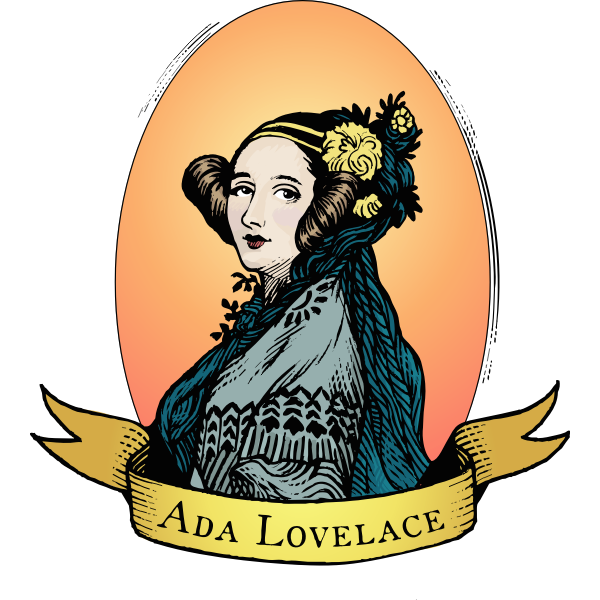

1. Nascimento e Origens:
- Ada Lovelace nasceu em 10 de dezembro de 1815, em Londres, Reino Unido.
- Filha única do poeta Lord Byron e Anne Isabella Milbanke.
2. Nome Completo:
- Seu nome completo era Augusta Ada King, Condessa de Lovelace.
3. Mentora de Charles Babbage:
- Colaborou com Charles Babbage, o inventor da "máquina analítica".
- Traduziu e anotou um artigo sobre a máquina, acrescentando suas próprias notas, que continham algoritmos. Esses algoritmos são considerados os primeiros programas de computador.
3. Visão Além da Máquina:
- Lovelace antecipou a capacidade das máquinas de realizar mais do que apenas cálculos matemáticos. Ela previu que poderiam ser usadas para criar música, arte e lidar com símbolos.
5. Visão Computacional:
- Ada Lovelace é reconhecida como a primeira programadora de computadores devido às suas contribuições pioneiras para a máquina analítica.
6. Colaboração com Babbage:
- Lovelace e Babbage compartilharam uma visão colaborativa única; ela fornecia um olhar analítico sobre a máquina, enquanto Babbage focava na engenharia.
7. Tragédias Pessoais:
- Ada enfrentou problemas de saúde ao longo de sua vida e morreu jovem aos 36 anos, em 27 de novembro de 1852, devido a câncer uterino.
8. Reconhecimento Atual:
- O Dia de Ada Lovelace é comemorado em 10 de dezembro, destacando a contribuição das mulheres para a ciência e tecnologia.
Essas são algumas curiosidades sobre Ada Lovelace, uma figura crucial na história da computação.